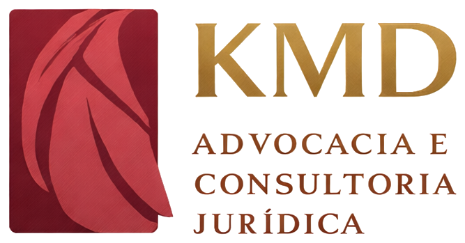

Áreas
Áreas de atuação
Atuação concentrada em direito do trabalho
Do preventivo ao contencioso, sempre do lado do empregador. Toque em uma área para ver o escopo.
PGR e NR-1Estruturação do Programa de Gerenciamento de Riscos com a inclusão dos riscos psicossociais, política interna de assédio e treinamento de lideranças, antes de a fiscalização chegar.
Defesa em juízoDefesa em reclamatórias, acordos, execução e sustentação oral em segunda instância, com relatório de risco por processo.
Rotina e documentosJornada, banco de horas, terceirização, contratação por pessoa jurídica, home office e desligamentos revisados caso a caso.
SindicatosAcompanhamento de convenções e acordos coletivos, mesas de negociação e cumprimento das cláusulas assumidas.
Passivo ocultoDiagnóstico do passivo trabalhista em operações societárias, com quantificação de contingência e plano de correção.
Prevenção práticaCapacitação de gestores em jornada, assédio e saúde mental no trabalho, com material próprio e casos reais.
Não sabe em qual área o seu caso entra? Descreva em duas linhas e nós dizemos.
Falar com o escritório